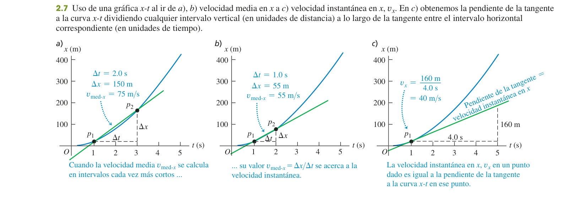
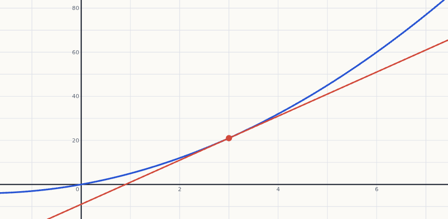
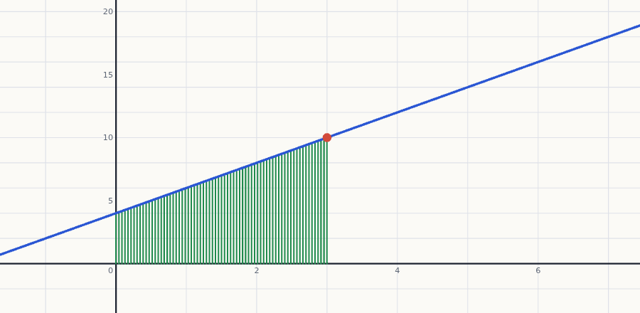

Movimiento rectilíneo
El movimiento sobre una sola recta: dónde está algo (posición), qué tan rápido y hacia dónde va (velocidad) y cómo cambia esa velocidad (aceleración). El caso estrella es la aceleración constante —frenados, arranques, persecuciones y caída libre— con sus cuatro ecuaciones; cuando la aceleración cambia con el tiempo, se integra. Es la base de toda la cinemática que viene después.
El tema en 5 minutos P
Una sola recta, tres preguntas: ¿dónde está? (posición $x$), ¿qué tan rápido y hacia dónde va? (velocidad $v_x$) y ¿cómo cambia esa velocidad? (aceleración $a_x$). Cada una es la derivada de la anterior; al revés, cada una es la integral de la siguiente. Casi todo el tema se reduce a un caso: aceleración constante (frenados, arranques, persecuciones, caída libre), que se resuelve con cuatro ecuaciones. Si la aceleración depende del tiempo, se integra.
Necesitas: despejar y resolver una ecuación de segundo grado, derivar e integrar polinomios sencillos ($t^n$) y, del tema 1, trabajar con signos y pasar unidades al SI (km/h → m/s: dividir entre 3.6). U usa $g=9.80\ \text{m/s}^2$; los exámenes suelen dar $9.81$.
El método en 4 pasos (para cualquier problema del tema)
Es la «Estrategia para resolver problemas 2.1» del libro. U p.48
Las 6 fórmulas que hay que saber
| Fórmula | Cuándo se usa |
|---|---|
| $v_{\text{med-}x}=\dfrac{\Delta x}{\Delta t},\qquad v_x=\dfrac{dx}{dt}$ | Te dan posiciones, o $x(t)$ como fórmula: «velocidad media», «velocidad en $t=…$», «¿cuándo se para?» ($v_x=0$). |
| $a_x=\dfrac{dv_x}{dt}=\dfrac{d^2x}{dt^2}$ | Te dan $v_x(t)$ o $x(t)$ y piden la aceleración; el máximo de $v_x$ está donde $a_x=0$. |
| $v_x=v_{0x}+a_xt$ | $a$ constante y no interviene la distancia: tiempos de frenado, velocidad al cabo de $t$. |
| $x=x_0+v_{0x}t+\tfrac12a_xt^2$ | $a$ constante y no interviene $v_x$ final: posición en un instante, persecuciones (igualar dos $x(t)$), caída desde una altura. |
| $v_x^2=v_{0x}^2+2a_x(x-x_0)$ | $a$ constante y no interviene el tiempo: frenar en una distancia, altura máxima, velocidad al llegar al suelo. |
| $v_x=v_{0x}+\displaystyle\int_0^t a_x\,dt',\quad x=x_0+\int_0^t v_x\,dt'$ | La aceleración depende del tiempo ($a(t)$, $g(t)$, fuerza que cambia por tramos). |
La cuarta ecuación de aceleración constante, $x-x_0=\tfrac12(v_{0x}+v_x)t$ (sin $a_x$), está en el §4 y en la chuleta.
Qué cae en examen
Hay 4 preguntas de examen real de este tema, todas resueltas aquí: tres problemas de 3 puntos — un satélite y una bala que se frenan en una distancia conocida (X2, X3: aceleración, fuerza y tiempo) y un cohete con aceleración que cambia con el tiempo y por tramos (X4: hay que integrar) — y una teoría de 4 puntos, «Velocidad instantánea», con dos cuestiones sobre media frente a instantánea (X1). Las técnicas del tema (elegir la ecuación de aceleración constante, el signo de $g$) reaparecen además en casi todos los problemas de Mecánica. X ×4
Elige tu ruta
Esta página + lo marcado 🔴 imprescindible + ejercicios del bloque «Núcleo» (con los tres problemas de examen).
Todo lo anterior + 🟡 conveniente + bloque «Práctica» + la pregunta de teoría X1.
Chuleta, errores frecuentes, lista de comprobación y X2, X4 y E6 sin mirar la solución.
¿?¿Qué tipo de problema es? 🔴 P
Lee el enunciado, busca la pista en la primera columna y ve directo al método y al ejercicio modelo.
| Si el enunciado dice… | Haz esto | Ejercicio modelo |
|---|---|---|
| «va y vuelve», «velocidad media y rapidez media» | Velocidad media = desplazamiento neto (con signo)/tiempo; rapidez media = distancia total/tiempo. | E1 |
| «$x(t)=bt^2-ct^3$», «velocidad en $t=…$», «¿cuándo vuelve a pararse?» | Deriva: $v_x=dx/dt$ (y $a_x=dv_x/dt$). «Se para» ⇒ resuelve $v_x(t)=0$. | E2 |
| Tabla de velocidades en varios instantes, «aceleración media en cada tramo» | $\Delta v_x/\Delta t$ tramo a tramo (pendiente de cada cuerda en $v$–$t$), con todo en SI. | E3 |
| «aceleración constante», faltan dos de las cinco magnitudes | Lista $x-x_0,\ t,\ v_{0x},\ v_x,\ a_x$; usa primero la ecuación que no contiene la otra incógnita. | E4 |
| «se frena hasta pararse en una distancia $d$», «penetra», «¿qué fuerza…?» | $|a|=v_0^2/2d$ (ec. 2.13), $t=2d/v_0$ (ec. 2.14); fuerza de contacto con la 2.ª ley incluyendo el peso. | X2, X3 |
| «alcanza a…», «arranca cuando le adelanta…» | $x(t)$ de cada móvil con el mismo origen y reloj; iguálalas y descarta $t=0$. | E5 |
| «se lanza hacia arriba», «se deja caer», «techo», «altura máxima» | Aceleración constante con $a_y=-g$ ($+y$ arriba); elige la raíz (o el signo de $v_y$) por física. | E6 |
| «$a(t)=…$», «$g(t)$ decrece», «de 0 a 10 s una fuerza y de 10 a 60 s otra» | Integra $a\to v\to x$ (ec. 2.17-2.18); en cada tramo, las condiciones iniciales son el final del anterior. | X4 |
| «Desarrolle el tema “Velocidad instantánea”» | Guion: idea → límite y derivada → signo y rapidez → tangente frente a cuerda → ejemplo → cuestiones con un caso concreto. | X1 |
1Desplazamiento, tiempo y velocidad media 🔴 U p.35-37
🎯 Antes de leer: haces 100 km en 2 horas. ¿Qué has calculado, la velocidad media o la instantánea? ¿Qué te marca el velocímetro? (Piénsalo 20 s; la respuesta está en esta sección.)
En este tema todo pasa sobre una recta (el eje $x$) y el objeto se trata como una partícula. Su posición $x$ es un número con signo: positivo a un lado del origen, negativo al otro. El desplazamiento entre $t_1$ y $t_2$ es el cambio de posición, siempre «final menos inicial»:
$$\Delta x = x_2-x_1 \qquad\text{(2.1)}\qquad\qquad v_{\text{med-}x} = \frac{x_2-x_1}{t_2-t_1} = \frac{\Delta x}{\Delta t} \qquad\text{(2.2)}$$La velocidad media tiene signo: positiva si $x$ aumenta (se mueve hacia $+x$), negativa si disminuye. El signo depende del sentido $+$ que hayas elegido para el eje.
Ejemplo mínimo (fig. 2.1-2.2 de U): un coche de arrancones pasa de $x_1=19$ m en $t_1=1.0$ s a $x_2=277$ m en $t_2=4.0$ s: $v_{\text{med-}x}=258\ \text{m}/3.0\ \text{s}=86$ m/s. Una camioneta hace el camino inverso (de 277 m a 19 m) en 9.0 s: $v_{\text{med-}x}=-258\ \text{m}/9.0\ \text{s}=-29$ m/s, negativa porque va hacia $-x$.
U p.35-36La rapidez media es la distancia total recorrida entre el tiempo: siempre positiva y sin dirección. Solo coincide con $|v_{\text{med-}x}|$ si el objeto no da la vuelta. Un nadador que hace 100.0 m (ida y vuelta en una piscina de 50 m) en 46.91 s tiene rapidez media $100.0/46.91=2.132$ m/s, pero velocidad media cero: acaba donde empezó.
U p.38✍️ Comprueba que lo has entendido (2 min)
- Un corredor está en $x=10$ m en $t=2.0$ s y en $x=-20$ m en $t=8.0$ s. ¿Su velocidad media?
Ver respuesta
$v_{\text{med-}x}=(-20-10)/(8.0-2.0)=-5.0$ m/s: 5.0 m/s hacia $-x$. - Das una vuelta completa a una pista de 400 m en 80 s. ¿Velocidad media y rapidez media?
Ver respuesta
Velocidad media 0 (vuelves al punto de salida); rapidez media $400/80=5.0$ m/s. - ¿Puede ser negativa la velocidad media? ¿Y la rapidez media?
Ver respuesta
La velocidad media sí (movimiento neto hacia $-x$); la rapidez media nunca.
2Velocidad instantánea 🔴 U p.37-40
🎯 Antes de leer: en una gráfica posición-tiempo, ¿qué representa la pendiente de la recta tangente en un punto? (Piénsalo 20 s; la respuesta está en esta sección.)
La velocidad media resume todo un viaje; el velocímetro dice cómo vas ahora. Esa velocidad «ahora» es el límite de la velocidad media cuando el intervalo se hace cero, es decir, la derivada de la posición:
$$v_x = \lim_{\Delta t\to0}\frac{\Delta x}{\Delta t} = \frac{dx}{dt} \qquad\text{(2.3)}$$Tiene el signo del movimiento ($+$ hacia $+x$, $-$ hacia $-x$). Su valor absoluto es la rapidez instantánea $v=|v_x|\ge0$: $v_x=25$ m/s y $v_x=-25$ m/s van en sentidos opuestos con la misma rapidez. «Velocidad» a secas significa siempre la instantánea.
Ejemplo mínimo (ejemplo 2.1 de U): un guepardo sigue $x=20\ \text{m}+(5.0\ \text{m/s}^2)t^2$. Entre $t=1.0$ s y $t=2.0$ s se desplaza $40-25=15$ m (velocidad media 15 m/s). Derivando, $v_x=(10\ \text{m/s}^2)\,t$: $v_x=10$ m/s en $t=1.0$ s y 20 m/s en $t=2.0$ s. La media del intervalo no coincide con la velocidad de ningún extremo.
U p.37-39La velocidad media entre dos instantes es la pendiente de la cuerda que une $(t_1,x_1)$ y $(t_2,x_2)$. Al acercar los dos puntos, la cuerda tiende a la tangente: su pendiente es la velocidad instantánea. Leer la gráfica: tangente que sube ⇒ $v_x\gt 0$; que baja ⇒ $v_x\lt 0$; horizontal ⇒ $v_x=0$ (el objeto da la vuelta o está parado); cuanto más empinada, más rapidez. Conviene acompañarla de un diagrama de movimiento (fig. 2.8): la partícula dibujada en varios instantes con su flecha de velocidad.
U p.39-40
✍️ Comprueba que lo has entendido (2 min)
- $x(t)=3t^2-12t$ (m, s). ¿Velocidad en $t=1$ s? ¿Cuándo se para?
Ver respuesta
$v_x=6t-12$: $v_x(1)=-6$ m/s (se mueve hacia $-x$ con rapidez 6 m/s). Se para cuando $6t-12=0$: $t=2$ s. - En una gráfica $x$–$t$ la curva tiene un máximo en $t=3$ s. ¿Qué pasa con la velocidad en ese instante?
Ver respuesta
La tangente es horizontal: $v_x=0$. El objeto se detiene un instante y cambia de sentido. - Un cuerpo está en $x=-5$ m con $v_x=+3$ m/s. ¿Hacia dónde se mueve?
Ver respuesta
Hacia $+x$: el signo de $x$ dice dónde está y el de $v_x$, hacia dónde va. Son independientes.
3Aceleración media e instantánea 🔴 U p.40-44
🎯 Antes de leer: un coche tiene velocidad negativa y aceleración positiva. ¿Acelera o frena? (Piénsalo 20 s; la respuesta está en esta sección.)
Es el mismo patrón otra vez, un escalón más arriba: la aceleración mide cómo cambia la velocidad.
$$a_{\text{med-}x} = \frac{v_{2x}-v_{1x}}{t_2-t_1} = \frac{\Delta v_x}{\Delta t} \quad\text{(2.4)}\qquad a_x = \lim_{\Delta t\to0}\frac{\Delta v_x}{\Delta t} = \frac{dv_x}{dt} = \frac{d^2x}{dt^2} \quad\text{(2.5)-(2.6)}$$En la gráfica $v_x$–$t$: aceleración media = pendiente de la cuerda; aceleración instantánea = pendiente de la tangente. Unidades: m/s².
Ejemplo mínimo (ejemplo 2.3 de U): un coche lleva $v_x=60\ \text{m/s}+(0.50\ \text{m/s}^3)t^2$. Derivando, $a_x=(1.0\ \text{m/s}^3)\,t$: vale 1.0 m/s² en $t=1.0$ s y 3.0 m/s² en $t=3.0$ s. Como cambia con el tiempo, aquí no sirven las ecuaciones de aceleración constante del §4.
U p.40-43El signo de $a_x$ por sí solo no dice si el objeto va más deprisa o más despacio:
- $v_x$ y $a_x$ con el mismo signo ⇒ la rapidez aumenta (hacia $+x$ o hacia $-x$).
- $v_x$ y $a_x$ con signos opuestos ⇒ la rapidez disminuye: con $v_x=-8$ m/s y $a_x=+2$ m/s², el objeto frena aunque la aceleración sea positiva.
Por eso conviene evitar la palabra «desaceleración»: puede ser $a_x$ positiva o negativa según el signo de $v_x$.
U p.43✍️ Comprueba que lo has entendido (2 min)
- Un coche pasa de 20 m/s a 5.0 m/s en 3.0 s, moviéndose hacia $+x$. ¿Aceleración media? ¿Acelera o frena?
Ver respuesta
$a_{\text{med-}x}=(5.0-20)/3.0=-5.0$ m/s². Frena: $v_x\gt 0$ y $a_x\lt 0$. - $x(t)=2t^3$ (m, s). ¿Aceleración en $t=2$ s?
Ver respuesta
$v_x=6t^2$, $a_x=12t$: $a_x(2)=24$ m/s². - En lo alto de un tiro vertical, $v_y=0$. ¿Es cero la aceleración?
Ver respuesta
No: sigue siendo $a_y=-g$. Velocidad cero no implica aceleración cero (§5).
4Movimiento con aceleración constante 🔴 U p.45-50
🎯 Antes de leer: un coche frena con aceleración constante hasta pararse. Si frena desde el doble de rapidez, ¿cuánta más distancia necesita? (Piénsalo 20 s; la respuesta está en esta sección.)
Si $a_x$ no cambia, la velocidad crece al mismo ritmo y la posición sigue una parábola. Con $x_0,v_{0x}$ en $t=0$, las cinco magnitudes son $x-x_0,\ t,\ v_{0x},\ v_x,\ a_x$, y cada ecuación relaciona cuatro de ellas:
| Ecuación | Fórmula | No aparece |
|---|---|---|
| 2.8 | $v_x = v_{0x}+a_xt$ | $x-x_0$ |
| 2.12 | $x = x_0+v_{0x}t+\tfrac12a_xt^2$ | $v_x$ |
| 2.13 | $v_x^2 = v_{0x}^2+2a_x(x-x_0)$ | $t$ |
| 2.14 | $x-x_0 = \tfrac12(v_{0x}+v_x)t$ | $a_x$ |
Elige la que no contiene la magnitud que ni tienes ni te piden. Solo con $a_x$ constante, además, $v_{\text{med-}x}=\tfrac12(v_{0x}+v_x)$ (2.10).
Ejemplo mínimo (ejemplo 2.4 de U): un motorista está en $x_0=5.0$ m con $v_{0x}=15$ m/s y $a_x=4.0$ m/s². En $t=2.0$ s: $x=5.0+15(2.0)+\tfrac12(4.0)(2.0)^2=43$ m (2.12) y $v_x=15+4.0(2.0)=23$ m/s (2.8). ¿Dónde va a 25 m/s? Falta $t$ ⇒ 2.13: $x=5.0+\dfrac{25^2-15^2}{2(4.0)}=55$ m.
U p.45-48Con $a_x$ constante, la gráfica $v_x$–$t$ es una recta de pendiente $a_x$ (2.8) y la gráfica $x$–$t$ una parábola (2.12), cóncava hacia arriba si $a_x\gt 0$ y hacia abajo si $a_x\lt 0$. El área bajo la recta $v_x$–$t$ (rectángulo $v_{0x}t$ + triángulo $\tfrac12a_xt^2$) es justo el desplazamiento $x-x_0$: de ahí sale la ec. 2.12.
U p.46-48

Antes de tocar ninguna fórmula escribe $x-x_0,\ t,\ v_{0x},\ v_x,\ a_x$ y marca qué sabes y qué te piden. Traduce el enunciado: «parte del reposo» ⇒ $v_{0x}=0$; «se detiene» ⇒ $v_x=0$; «¿dónde está cuando va a 25 m/s?» ⇒ $x$ cuando $v_x=25$ m/s. Con dos móviles (persecución), escribe $x(t)$ de cada uno con el mismo origen y el mismo reloj e iguálalas (E5). Si la aceleración cambia en un instante, cada tramo tiene sus propias ecuaciones y el final de uno es el inicio del siguiente.
U p.48-49✍️ Comprueba que lo has entendido (2 min)
- Un coche a 25 m/s frena con aceleración constante de módulo 5.0 m/s². ¿Distancia y tiempo de frenado?
Ver respuesta
Sin $t$ ⇒ 2.13: $0=25^2-2(5.0)d$, $d=62.5$ m. Con 2.8: $t=25/5.0=5.0$ s. - Parte del reposo con $a_x=2.0$ m/s². ¿Posición y velocidad a los 4.0 s?
Ver respuesta
$x=\tfrac12(2.0)(4.0)^2=16$ m; $v_x=2.0(4.0)=8.0$ m/s. - Pasa de 10 m/s a 30 m/s en 100 m. ¿Aceleración? ¿Qué ecuación usas?
Ver respuesta
No hay tiempo ⇒ 2.13: $a_x=(30^2-10^2)/(2\cdot100)=4.0$ m/s².
5Cuerpos en caída libre 🔴 U p.50-53
🎯 Antes de leer: lanzas una piedra hacia arriba. En el punto más alto, ¿cuánto valen su velocidad y su aceleración? (Piénsalo 20 s; la respuesta está en esta sección.)
Si se desprecia el aire, todos los cuerpos caen en un lugar dado con la misma aceleración, sea cual sea su peso (Galileo). Es el modelo de caída libre, que incluye también el movimiento hacia arriba. Cerca de la superficie terrestre su magnitud es $g=9.80\ \text{m/s}^2$ (en la Luna, 1.6 m/s²). $g$ es una magnitud: siempre positiva. Con $+y$ hacia arriba, $a_y=-g$ y valen las cuatro ecuaciones del §4 cambiando $x$ por $y$.
Ejemplo mínimo (ejemplo 2.7 de U): pelota lanzada hacia arriba a 15.0 m/s. En $t=1.00$ s: $y=15.0(1.00)-\tfrac12(9.80)(1.00)^2=+10.1$ m y $v_y=15.0-9.80(1.00)=+5.2$ m/s (sube frenando). Altura máxima ($v_y=0$, ec. 2.13): $y=15.0^2/(2\cdot9.80)=11.5$ m. A 5.00 m de altura, $v_y=\pm11.3$ m/s: pasa dos veces, subiendo y bajando, con la misma rapidez.
U p.50-52Fija el sentido $+$ antes de sustituir y no lo cambies: con $+y$ arriba, $a_y=-9.80$ m/s² tanto subiendo como bajando; con $+y$ abajo, $a_y=+9.80$ m/s². Y en el punto más alto $v_y=0$, pero la aceleración no es cero: sigue siendo $-g$ (si lo fuera, la pelota se quedaría flotando).
U p.50, 52✍️ Comprueba que lo has entendido (2 min)
- Sueltas una piedra desde 20.0 m. ¿Cuánto tarda en llegar al suelo y a qué velocidad llega? ($g=9.80$ m/s²)
Ver respuesta
$20.0=\tfrac12(9.80)t^2$ ⇒ $t=2.02$ s; $v=\sqrt{2(9.80)(20.0)}=19.8$ m/s hacia abajo. - Lanzas una pelota hacia arriba a 19.6 m/s. ¿Cuánto tarda en llegar arriba y a qué altura sube?
Ver respuesta
$t=19.6/9.80=2.00$ s; $h=19.6^2/(2\cdot9.80)=19.6$ m. - Si duplicas la velocidad de lanzamiento, ¿qué pasa con la altura máxima y con el tiempo de subida?
Ver respuesta
$h=v_0^2/2g$ se multiplica por 4; $t=v_0/g$ se multiplica por 2.
6Velocidad y posición por integración 🔴 U p.53-55
🎯 Antes de leer: si la aceleración depende del tiempo, ¿puedes usar $v=v_0+at$? ¿Qué operación matemática usas en su lugar? (Piénsalo 20 s; la respuesta está en esta sección.)
Las cuatro ecuaciones del §4 solo valen con $a_x$ constante. Si te dan $a_x(t)$, se vuelve a la definición: la velocidad es el área acumulada bajo $a_x$–$t$, y la posición, el área acumulada bajo $v_x$–$t$:
$$v_x = v_{0x} + \int_0^t a_x\,dt' \quad\text{(2.17)}\qquad x = x_0 + \int_0^t v_x\,dt' \quad\text{(2.18)}$$El área cuenta con signo (por debajo del eje, negativa). Se integra dos veces: primero $a\to v$, luego $v\to x$.
Ejemplo mínimo (ejemplo 2.9 de U): un coche pasa por $x_0=50$ m a $v_{0x}=10$ m/s con $a_x=2.0\ \text{m/s}^2-(0.10\ \text{m/s}^3)t$. Integrando: $v_x=10+2.0t-0.050t^2$ y $x=50+10t+1.0t^2-t^3/60$. La velocidad es máxima cuando $a_x=0$, en $t=20$ s: $v_{\text{máx}}=30$ m/s, en $x=517$ m. Después $a_x\lt 0$ con $v_x\gt 0$: frena.
U p.54-55Si el enunciado da $a$ (o $g$, o una fuerza) como función de $t$, o la cambia de valor a mitad del movimiento, integra; no uses $y=\tfrac12at^2$ con una «aceleración media» inventada. Con varios tramos, el valor final de $v$ y $x$ en un tramo es el valor inicial del siguiente: $v$ y $x$ son continuas aunque $a$ salte. Es el método del cohete de examen (X4).
P✍️ Comprueba que lo has entendido (2 min)
- $a_x=6t$ (m/s², s), parte del reposo en $x=0$. ¿$v_x$ y $x$ en $t=2$ s?
Ver respuesta
$v_x=3t^2$ ⇒ 12 m/s; $x=t^3$ ⇒ 8 m. - ¿Qué representa el área bajo la gráfica $a_x$–$t$ entre dos instantes? ¿Y bajo $v_x$–$t$?
Ver respuesta
El cambio de velocidad $\Delta v_x$; el desplazamiento $\Delta x$. - Un móvil tiene $a_x=3$ m/s² durante 4 s y luego $a_x=0$. ¿Puedes usar $x=\tfrac12a_xt^2$ para todo el movimiento?
Ver respuesta
No: hay dos tramos. Primero $\Delta v_x=12$ m/s; en el segundo tramo va a velocidad constante, partiendo de la posición y velocidad del final del primero.
7Ejercicios resueltos
Las 4 preguntas de examen real (X1-X4) están todas aquí, completas: los tres problemas en el «Núcleo» y la teoría (X1) en su propio bloque. Las acompañan seis ejercicios del solucionario del libro (E1-E6, traducidos y ampliados) que cubren los métodos que el examen todavía no ha pedido: derivar $x(t)$, elegir la ecuación de aceleración constante, persecuciones y caída libre. Están ordenados por método, no por fuente. Intenta resolver tú antes de abrir la solución. Cada ejercicio termina con su receta.
| Ejercicio | Qué tipo es | Método que te llevas |
|---|---|---|
| E2 | Posición dada como función $x(t)$ | Deriva para $v_x(t)$; «se detiene» ⇒ resuelve $v_x(t)=0$ y descarta $t=0$ |
| E4 | Aceleración constante con dos incógnitas | Lista de 5 magnitudes; primero la ecuación sin la otra incógnita (2.14), luego 2.8 |
| X2 · Feb 2023 | Frenado hasta pararse en una distancia, con fuerza de contacto | $|a|=v_0^2/2d$, $t=2d/v_0$; $N=m(|a|+g)$ con la 2.ª ley completa |
| X3 · Feb 2024 | El mismo frenado con datos pequeños (bala) | Igual que X2; el peso apenas cuenta, pero se incluye porque dan $g$ |
| E5 | Persecución de dos móviles | Mismo origen y reloj, iguala $x_1(t)=x_2(t)$ y descarta $t=0$ |
| E6 | Caída libre hacia un obstáculo | $a_y=-g$; sin tiempo, ec. 2.13; el signo de $v_y$ lo decide la física (¿sube o baja?) |
| X4 · Feb 2019 | Aceleración que depende del tiempo, por tramos | Integra $a\to v\to y$; condiciones iniciales de cada tramo = final del anterior |
E2 — Problema 2.7: velocidad media e instantánea de x(t) 🔴 E
Un automóvil está detenido ante un semáforo. Después viaja en línea recta y su distancia al semáforo es $x(t)=bt^2-ct^3$, con $b=2.40\ \text{m/s}^2$ y $c=0.120\ \text{m/s}^3$. a) Calcula la velocidad media entre $t=0$ y $t=10.0$ s. b) Calcula la velocidad instantánea en $t=0$, $t=5.0$ s y $t=10.0$ s. c) ¿Cuánto tiempo después de arrancar vuelve a estar detenido?
Inténtalo primero; abre una pista solo si te atascas.
Pista 1
Velocidad media con dos posiciones: $(x_2-x_1)/\Delta t$. Velocidad instantánea: deriva $x(t)$.
Pista 2
«Se detiene» significa $v_x(t)=0$ (no $x(t)/t=0$); descarta la solución $t=0$.
Solución completa
- $v_{med-x}=\dfrac{x_2-x_1}{t_2-t_1}$; $v_x=\dfrac{dx}{dt}$; «en reposo» ⇒ $v_x=0$
- Derivada: $\dfrac{d}{dt}t^n=n\,t^{n-1}$
- a) Velocidad media ($x(0)=0$): $$x(10)=2.40(100)-0.120(1000)=240-120=120\ \text{m},\qquad v_{med}=\frac{120-0}{10}=\mathbf{12.0\ m/s}$$
- b) Velocidad instantánea (derivando): $$v_x(t)=2bt-3ct^2$$ $$v_x(0)=\mathbf0,\qquad v_x(5)=2(2.40)(5)-3(0.120)(25)=24.0-9.0=\mathbf{15.0\ m/s}$$ $$v_x(10)=2(2.40)(10)-3(0.120)(100)=48.0-36.0=\mathbf{12.0\ m/s}$$
- c) Vuelve a estar detenido ($v_x=0$, descartando $t=0$): $$2bt-3ct^2=0\ \Rightarrow\ t=\frac{2b}{3c}=\frac{2(2.40)}{3(0.120)}=\mathbf{13.3\ s}$$
E4 — Problema 2.19: hallar v₀ y a sin conocerlas 🔴 E
Un antílope con aceleración constante recorre 70.0 m en 6.00 s, y su velocidad al final de ese intervalo es 15.0 m/s. Calcula su velocidad inicial y su aceleración.
Inténtalo primero; abre una pista solo si te atascas.
Pista 1
Lista las cinco magnitudes de la tabla 2.4 e identifica cuál no interviene: aquí, la aceleración.
Pista 2
La ecuación $x-x_0=\tfrac12(v_{0x}+v_x)t$ da $v_{0x}$ y después $a_x=(v_x-v_{0x})/t$.
Solución completa
- $a$ constante: $x-x_0=\tfrac12(v_{0x}+v_x)\,t$ (no contiene $a_x$)
- $v_x=v_{0x}+a_x\,t$
- Datos: $$x-x_0=70.0\ \text{m},\quad t=6.00\ \text{s},\quad v_x=15.0\ \text{m/s};\quad\text{incógnitas: }v_{0x},\ a_x$$
- Velocidad inicial (ecuación sin $a_x$): $$v_{0x}=\frac{2(x-x_0)}{t}-v_x=\frac{2(70.0)}{6.00}-15.0=23.33-15.0=\mathbf{8.33\ m/s}$$
- Aceleración: $$a_x=\frac{v_x-v_{0x}}{t}=\frac{15.0-8.33}{6.00}=\mathbf{1.11\ m/s^2}$$ $70.0/6.00=11.7$ m/s es la velocidad media, no $v_{0x}$ ni $v_x$.
X2 — Satélite que se estrella 🔴 examen real X
Un satélite artificial se estrella contra la Tierra. Su masa es de 210 kg y la velocidad de impacto contra la superficie es de 311 km/h. Los restos del satélite penetraron hasta una profundidad de 81 cm. Suponiendo que era constante: a) ¿Cuál fue su aceleración durante el choque? b) ¿Qué fuerza ejerció el suelo sobre el satélite durante el choque? c) ¿Durante cuánto tiempo se ejerció la mencionada fuerza? (Considere $g=9.81$ m/s².)
Inténtalo primero; abre una pista solo si te atascas.
Pista 1
Pasa 311 km/h a m/s. Sin tiempo: $0=v_0^2+2a\,d$ ⇒ $|a|=v_0^2/(2d)$.
Pista 2
La fuerza del suelo no es la neta: $N=m(|a|+g)$ en un impacto vertical. El tiempo: $t=2d/v_0$.
Solución completa
- MRUA hasta parar ($v=0$): $v^2=v_0^2+2a\,d$ ⇒ $|a|=\dfrac{v_0^2}{2d}$; $d=\tfrac12 v_0\,t$ ⇒ $t=\dfrac{2d}{v_0}$
- Segunda ley (con $+y$ hacia abajo): $m\,g-N=m(-|a|)$ ⇒ $N=m(|a|+g)$
- $1\ \text{km/h}=1/3.6\ \text{m/s}$
- Datos en SI (impacto vertical, $+y$ hacia abajo): $$v_0=\frac{311}{3.6}=86.39\ \text{m/s},\qquad d=0.81\ \text{m}$$
- a) Aceleración: $$|a|=\frac{v_0^2}{2d}=\frac{(86.39)^2}{2(0.81)}=\mathbf{4.61\times10^3\ m/s^2}\ \ (\approx470\,g,\ \text{hacia arriba})$$
- b) Fuerza del suelo ($N$, no la fuerza neta): $$N=m(|a|+g)=210(4607+9.81)=\mathbf{9.69\times10^5\ N}$$ La fuerza neta es solo $m|a|=9.67\times10^5$ N; $N$ es algo mayor porque además contrarresta el peso.
- c) Tiempo: $$t=\frac{2d}{v_0}=\frac{2(0.81)}{86.39}=\mathbf{1.88\times10^{-2}\ s}\ \ (\approx19\ \text{ms})$$
Reparto orientativo (el enunciado solo fija 3 puntos): a) aceleración (1) · b) fuerza del suelo (1) · c) tiempo (1). Dentro de cada apartado suele valorarse en este orden:
- Planteamiento (≈30 %): datos en SI ($311$ km/h $=86{,}4$ m/s), eje y sentido, e impacto supuesto vertical.
- Ecuaciones (≈40 %): $|a|=v_0^2/2d$; segunda ley con el peso, $N=m(|a|+g)$; $t=2d/v_0$.
- Resultado y unidades (≈30 %): $a=4{,}61\times10^3$ m/s², $N=9{,}69\times10^5$ N y $t=1{,}88\times10^{-2}$ s con unidades.
Un resultado numérico sin planteamiento rara vez puntúa; un planteamiento correcto con un fallo de cuentas sí suele puntuar la mayor parte.
X3 — Bala que penetra un material 🔴 examen real X
Para probar una protección antibalas, se dispara una bala de 10 g de masa contra una pieza de un nuevo material que se encuentra en el suelo, de forma que la trayectoria de la bala es perpendicular sobre el material (es decir, vertical hacia abajo). La bala queda incrustada en el material penetrando 2 m de profundidad. Si se disparó a 100 m/s y se supone que la aceleración al incrustarse es constante: a) el valor de la deceleración; b) ¿qué fuerza ejerció el material sobre la bala para frenarla? c) ¿qué tiempo tardó la bala hasta pararse? (Considere $g=9.81$ m/s².)
Inténtalo primero; abre una pista solo si te atascas.
Pista 1
Impacto vertical: sobre la bala actúan el peso (a favor del avance) y la fuerza del material (en contra).
Pista 2
$|a|=v_0^2/(2d)$, $F=m(g+|a|)$ y $t=2d/v_0$ (se comprueba con $t=v_0/|a|$).
Solución completa
- MRUA hasta parar: $|a|=\dfrac{v_0^2}{2d}$; $t=\dfrac{2d}{v_0}$ (comprobación: $t=v_0/|a|$)
- Segunda ley ($+x$ hacia abajo, en el avance): $m\,g-F=m(-|a|)$ ⇒ $F=m(g+|a|)$
- Datos: $$v_0=100\ \text{m/s},\quad v=0,\quad d=2\ \text{m},\quad m=0.010\ \text{kg}$$
- a) Deceleración: $$|a|=\frac{v_0^2}{2d}=\frac{100^2}{2(2)}=\mathbf{2500\ m/s^2}\ \ (\approx255\,g)$$
- b) Fuerza del material (el peso va a favor del avance, $F$ en contra): $$F=m(g+|a|)=0.010(2500+9.81)=\mathbf{25.1\ N}$$ Sin el peso saldría 25.0 N (0.4 % menos); como el enunciado da $g$, se incluye.
- c) Tiempo: $$t=\frac{2d}{v_0}=\frac{2(2)}{100}=\mathbf{0.040\ s}\quad\Big(t=\frac{v_0}{|a|}=\frac{100}{2500}=0.040\ \text{s}\ \checkmark\Big)$$
Reparto orientativo (el enunciado solo fija 3 puntos): a) deceleración (1) · b) fuerza (1) · c) tiempo (1). Dentro de cada apartado suele valorarse en este orden:
- Planteamiento (≈30 %): eje en el sentido de avance de la bala y las dos fuerzas (peso y material).
- Ecuaciones (≈40 %): $|a|=v_0^2/2d$; $F=m(g+|a|)$; $t=2d/v_0$.
- Resultado y unidades (≈30 %): $a=2500$ m/s², $F=25{,}1$ N y $t=0{,}040$ s con unidades.
Un resultado numérico sin planteamiento rara vez puntúa; un planteamiento correcto con un fallo de cuentas sí suele puntuar la mayor parte.
E5 — Problema 2.34: persecución de dos móviles 🔴 E
En un semáforo, un coche arranca desde el reposo con aceleración constante $a=2.80\ \text{m/s}^2$ justo cuando un camión lo adelanta a velocidad constante $v=20.0\ \text{m/s}$. a) ¿A qué distancia del semáforo el coche alcanza al camión? b) ¿A qué velocidad va el coche en ese instante?
Inténtalo primero; abre una pista solo si te atascas.
Pista 1
Escribe $x(t)$ de cada móvil con el mismo origen y reloj e iguálalas; descarta la raíz $t=0$.
Pista 2
No se alcanzan cuando tienen la misma velocidad: ese es el instante de máxima separación.
Solución completa
- Coche (desde el reposo): $x_c=\tfrac12a\,t^2$; camión (velocidad constante): $x_k=v\,t$
- Alcance: $x_c=x_k$ (descartar la raíz $t=0$); velocidad del coche: $v_c=a\,t$
- Posiciones (mismo origen y mismo reloj): $$x_c(t)=\tfrac12(2.80)t^2=1.40\,t^2,\qquad x_k(t)=20.0\,t$$
- Instante del encuentro: $$1.40\,t^2=20.0\,t\ \Rightarrow\ t=\frac{20.0}{1.40}=14.29\ \text{s}$$
- a) Distancia: $$x=20.0(14.29)=\mathbf{286\ m}\quad\Big(\text{comprobación: }\tfrac12(2.80)(14.29)^2=286\ \text{m}\Big)$$
- b) Velocidad del coche: $$v=a\,t=2.80(14.29)=\mathbf{40.0\ m/s}\ \ (\text{el doble que el camión})$$ Igual velocidad ocurre en $t=v/a=7.14$ s: es el instante de máxima separación, no el de encuentro.
E6 — Problema 2.38: caída libre hacia un techo 🔴 E
Se lanza una bola de masilla verticalmente hacia arriba con $v_0=9.50\ \text{m/s}$, hacia un techo situado 3.60 m por encima del punto de lanzamiento. a) Calcula la velocidad de la bola justo al llegar al techo. b) Calcula cuánto tiempo tarda en llegar.
Inténtalo primero; abre una pista solo si te atascas.
Pista 1
Con $+y$ hacia arriba, $a_y=-g$. Comprueba que la altura máxima, $v_0^2/2g$, supera 3,60 m.
Pista 2
Sin tiempo, usa $v_y^2=v_{0y}^2+2a_y\Delta y$ y toma la raíz positiva (todavía sube).
Solución completa
- Caída libre con $+y$ hacia arriba: $a_y=-g=-9.80$ m/s²
- $v_y^2=v_{0y}^2+2a_y\,\Delta y$; $v_y=v_{0y}+a_y\,t$; altura máxima $v_0^2/(2g)$
- ¿Llega al techo? $$h_{m\acute ax}=\frac{9.50^2}{2(9.80)}=4.60\ \text{m}>3.60\ \text{m}\ \Rightarrow\ \text{sí, todavía subiendo}$$
- a) Velocidad al llegar (sin tiempo): $$v_y^2=9.50^2+2(-9.80)(3.60)=90.25-70.56=19.69\ \Rightarrow\ v_y=\mathbf{+4.44\ m/s}$$ Todavía sube: se toma la raíz positiva.
- b) Tiempo: $$t=\frac{v_y-v_{0y}}{a_y}=\frac{4.44-9.50}{-9.80}=\mathbf{0.517\ s}$$
X4 — Cohete con aceleración variable por tramos 🔴 examen real X
Un cohete se lanza verticalmente. La aceleración de la gravedad efectiva decrece con el tiempo, $g(t)=g_0-k_3t$ con $g_0=10\ \text{m/s}^2$ y $k_3=0.1\ \text{m/s}^3$. Durante los primeros 10 s el motor ejerce una fuerza $F_1=k_1M$ (con $k_1=20\ \text{m/s}^2$); de $t=10$ s a $t=60$ s, una fuerza menor $F_2=k_2M$ (con $k_2=15\ \text{m/s}^2$). Calcula la altura alcanzada tras 60 s de ascenso.
Inténtalo primero; abre una pista solo si te atascas.
Pista 1
La masa se cancela: $a(t)=k-g(t)$; $a$ no es constante, hay que integrar dos veces.
Pista 2
Resuelve por tramos y empalma $v$ e $y$ en $t=10$ s (no se reinician).
Solución completa
- Segunda ley con $F=kM$: $M\,a=kM-Mg(t)$ ⇒ $a(t)=k-g_0+k_3\,t$ (la masa se cancela)
- $v=\int a\,dt$; $y=\int v\,dt$; en el cambio de tramo, $v$ e $y$ son continuas
- Tramo 1 (0-10 s; $k_1=20$): $$a_1(t)=20-10+0.1\,t=10+0.1\,t,\qquad v_1(t)=10\,t+0.05\,t^2,\qquad y_1(t)=5\,t^2+\frac{t^3}{60}$$
- Valores en $t=10$ s: $$v_1(10)=100+5=105\ \text{m/s},\qquad y_1(10)=500+\frac{1000}{60}=516.7\ \text{m}$$
- Tramo 2 (10-60 s; $k_2=15$), con las condiciones iniciales heredadas: $$a_2(t)=15-10+0.1\,t=5+0.1\,t$$ $$v_2(t)=105+\int_{10}^{t}(5+0.1\,t')\,dt'=50+5\,t+0.05\,t^2$$ $$y_2(t)=\frac{t^3}{60}+2.5\,t^2+50\,t-250$$ Las constantes se ajustan para que $v_2(10)=105$ e $y_2(10)=516.7$.
- En $t=60$ s: $$v_2(60)=50+300+180=530\ \text{m/s}$$ $$y_2(60)=\frac{216\,000}{60}+9000+3000-250=3600+9000+3000-250=\mathbf{15\,350\ m}\approx15.4\ \text{km}$$
Reparto orientativo (el enunciado solo fija 3 puntos): una sola pregunta: altura a los 60 s. Dentro de cada apartado suele valorarse en este orden:
- Planteamiento (≈30 %): segunda ley del cohete con el peso, $F-Mg=Ma$, y cancelación de la masa.
- Ecuaciones (≈40 %): $a(t)=k-g(t)$ en cada tramo, dos integraciones y empalme de $v$ e $y$ en $t=10$ s.
- Resultado y unidades (≈30 %): $y(60)\approx15\,350$ m con unidades.
Un resultado numérico sin planteamiento rara vez puntúa; un planteamiento correcto con un fallo de cuentas sí suele puntuar la mayor parte.
E1 — Problema 2.5: velocidad media frente a rapidez media 🟡 E
Caminas 60.0 m hacia el este en 28.0 s y luego 40.0 m hacia el oeste en 36.0 s, en línea recta. Calcula a) la velocidad media y b) la rapidez media de todo el recorrido.
- Velocidad media: $v_{med-x}=\dfrac{\Delta x}{\Delta t}$ (con signo)
- Rapidez media: $\dfrac{\text{distancia total recorrida}}{\Delta t}$ (siempre positiva)
- Desplazamiento y tiempo (este = $+x$): $$\Delta x=+60.0-40.0=+20.0\ \text{m},\qquad\Delta t=28.0+36.0=64.0\ \text{s}$$
- a) Velocidad media: $$v_{med-x}=\frac{20.0}{64.0}=\mathbf{+0.312\ m/s}\ \text{(hacia el este)}$$
- b) Rapidez media (distancia total, sin cancelar ida y vuelta): $$\frac{60.0+40.0}{64.0}=\mathbf{1.56\ m/s}$$
E3 — Problema 2.13: aceleración media entre tramos 🟡 E
Los datos de prueba de un Bugatti Veyron Super Sport dan su rapidez en cuatro instantes: $t=0$ (arranque, $v=0$), $t=2.1$ s ($v=60$ mph), $t=20.0$ s ($v=200$ mph) y $t=53$ s ($v=253$ mph). Calcula la aceleración media en cada uno de los tres tramos que separan esos cuatro instantes.
- Aceleración media: $a_{med-x}=\dfrac{\Delta v_x}{\Delta t}$ (cada tramo por separado)
- $1\ \text{mph}=0.44704\ \text{m/s}$
- Velocidades en m/s: $$60\to26.82,\qquad200\to89.41,\qquad253\to113.10\ \text{m/s}$$
- Tramo 1 (0 a 2.1 s): $$a_{med}=\frac{26.82-0}{2.1}=\mathbf{12.8\ m/s^2}$$
- Tramo 2 (2.1 a 20.0 s): $$a_{med}=\frac{89.41-26.82}{20.0-2.1}=\frac{62.59}{17.9}=\mathbf{3.50\ m/s^2}$$
- Tramo 3 (20.0 a 53 s): $$a_{med}=\frac{113.10-89.41}{53-20.0}=\frac{23.69}{33}=\mathbf{0.718\ m/s^2}$$ La aceleración media va decreciendo: la gráfica $v_x$-$t$ se va «aplanando».
1. Velocidad media y velocidad inicial P
Un antílope con aceleración constante recorre 70,0 m en 6,00 s y acaba a 15,0 m/s. ¿Cuál era su velocidad inicial?
Solución con fallo. «$v_0=70{,}0/6{,}00=11{,}7$ m/s».
¿Qué falla?
Eso es la velocidad media. Con aceleración constante, $x-x_0=\tfrac12(v_{0x}+v_x)t$: $v_{0x}=\dfrac{2(70{,}0)}{6{,}00}-15{,}0=\mathbf{8{,}33\ m/s}$.
2. Instante de reposo P
Un coche se mueve según $x(t)=bt^2-ct^3$ con $b=2{,}40$ m/s² y $c=0{,}120$ m/s³. ¿Cuándo está momentáneamente en reposo?
Solución con fallo. «En reposo ⇒ $x=0$»: $bt^2-ct^3=0\Rightarrow t=b/c=20{,}0$ s.
¿Qué falla?
Estar en reposo es $v_x=0$, no $x=0$. $v_x=2bt-3ct^2=0\Rightarrow t=\dfrac{2b}{3c}=\mathbf{13{,}3\ s}$.
3. Persecución P
Un coche arranca con $a=2{,}80$ m/s² cuando un camión a 20,0 m/s lo adelanta. ¿Dónde lo alcanza?
Solución con fallo. «Lo alcanza cuando van a la misma velocidad»: $t=20{,}0/2{,}80=7{,}14$ s y $x=143$ m.
¿Qué falla?
Con la misma velocidad es cuando están más separados. El encuentro es $x_{coche}=x_{camión}$: $1{,}40t^2=20{,}0t\Rightarrow t=14{,}3$ s y $x=\mathbf{286\ m}$.
4. Signo de la gravedad P
Se lanza una bola hacia arriba a 9,50 m/s hacia un techo a 3,60 m. ¿Con qué velocidad llega?
Solución con fallo. $v^2=v_0^2+2(+9{,}80)(3{,}60)=161\Rightarrow v=12{,}7$ m/s.
¿Qué falla?
Con $+y$ hacia arriba, $a_y=-g$: la gravedad frena la bola. $v^2=90{,}25-70{,}56=19{,}69$ y $v=\mathbf{4{,}44\ m/s}$ (menor que 9,50 m/s, como debe ser al subir).
X1 — Teoría: «Velocidad instantánea» (+ dos cuestiones) 🔴 examen real (teoría) X
Desarrolla el tema "Velocidad instantánea" y responde: (a) ¿Puede un cuerpo tener velocidad media nula en un intervalo pero aceleración media no nula? ¿Y velocidad instantánea nula pero aceleración instantánea no nula? (b) ¿En qué condiciones la velocidad media en un intervalo coincide con alguna velocidad instantánea dentro de ese intervalo?
- Velocidad media: $v_{med-x}=\dfrac{\Delta x}{\Delta t}$; instantánea: $v_x=\dfrac{dx}{dt}$; aceleración: $a_x=\dfrac{dv_x}{dt}$
- Teorema del valor medio: existe un instante con $v_x=v_{med-x}$; con $a$ constante, $v_{med-x}=\tfrac12(v_{0x}+v_x)$
- Motivación. La velocidad media (ec. 2.2) resume todo un intervalo de tiempo en un solo número, pero no dice nada sobre lo que pasó "en un instante" dentro de ese intervalo: un coche puede tener velocidad media 0 en una hora si sale y vuelve al mismo sitio, aunque haya ido a 120 km/h por el camino.
- Definición. La velocidad instantánea se define como el límite de la velocidad media cuando el intervalo de tiempo tiende a cero: $v_x=\lim_{\Delta t\to0}\Delta x/\Delta t = dx/dt$ (ec. 2.3). Es la derivada de la posición respecto al tiempo.
- Signo y rapidez. $v_x$ es un número con signo: positivo si el movimiento es hacia $+x$, negativo hacia $-x$. Su valor absoluto $|v_x|$ es la rapidez instantánea (lo que marca un velocímetro), siempre $\ge0$.
- Interpretación gráfica. En una gráfica $x$-$t$, la velocidad media entre $t_1$ y $t_2$ es la pendiente de la cuerda que une esos dos puntos; la velocidad instantánea en un instante $t_1$ es la pendiente de la recta tangente a la curva en ese punto — el límite de la cuerda cuando el segundo punto se acerca al primero.
- Ejemplo. Con $x=20\ \text{m}+(5.0\ \text{m/s}^2)t^2$ (movimiento tipo guepardo), $v_x=dx/dt=(10\ \text{m/s}^2)t$; en $t=1.0$ s, $v_x=10$ m/s: la pendiente de la tangente en ese instante, no la de ninguna cuerda.
- Relación con la aceleración y con la integral. Derivando otra vez se obtiene la aceleración instantánea, $a_x=dv_x/dt$ (ec. 2.5); en sentido inverso, integrando $a_x(t)$ se recupera $v_x(t)$ (ec. 2.17), y integrando $v_x(t)$ se recupera $x(t)$ (ec. 2.18) — la velocidad instantánea es el eslabón entre posición y aceleración.
- (a) Velocidad media nula con aceleración media no nula. Sí: en un tiro vertical que sube y vuelve exactamente al punto de partida en un tiempo $T$, el desplazamiento es $\Delta y=0$ (velocidad media nula), pero la velocidad cambia de $v_0$ a $-v_0$, así que $a_{\text{med}}=\Delta v_y/T=-2v_0/T\ne0$.
- ¿Y velocidad instantánea nula con aceleración instantánea no nula? También sí: en el punto más alto de ese mismo tiro, $v_y=0$ durante un instante, pero $a_y=-g\ne0$ sigue actuando en todo momento (la gravedad no "se apaga" porque el objeto esté momentáneamente parado).
- (b) ¿Cuándo coinciden v media e instantánea? Si la velocidad es constante en todo el intervalo, coinciden trivialmente en cualquier instante. En general (por el teorema del valor medio del cálculo) existe siempre al menos un instante dentro del intervalo donde la velocidad instantánea iguala a la media. Si además la aceleración es constante, ese instante es exactamente el punto medio del intervalo (consecuencia directa de $v_{\text{med-}x}=\tfrac12(v_{0x}+v_x)$, ec. 2.10, junto con $v_x=v_{0x}+a_xt$).
Guion propio (no es un enunciado de examen real). Define, da la ecuación, un ejemplo con números y cierra con el error típico:
- Aceleración: (1) idea: cómo cambia la velocidad; (2) media $\Delta v_x/\Delta t$ e instantánea $dv_x/dt=d^2x/dt^2$; (3) pendiente de la cuerda y de la tangente en $v_x$–$t$; (4) regla de signos: acelera si $v_x$ y $a_x$ tienen el mismo signo, frena si no; (5) ejemplo: $v_x=60+0.50t^2$ ⇒ $a_x=1.0t$; (6) error típico: velocidad nula no implica aceleración nula (punto más alto del tiro vertical).
- Aceleración constante: (1) $v_x$–$t$ recta y $x$–$t$ parábola; (2) deducción: $v_x=v_{0x}+a_xt$ y el desplazamiento como área bajo $v_x$–$t$ ⇒ $x=x_0+v_{0x}t+\tfrac12a_xt^2$; eliminando $t$, $v_x^2=v_{0x}^2+2a_x(x-x_0)$; (3) Tabla 2.4: qué magnitud falta en cada una; (4) caída libre con $a_y=-g$; (5) ejemplo: frenar desde 25 m/s con 5.0 m/s² ⇒ 62.5 m; (6) error típico: aplicarlas cuando $a$ depende del tiempo.
8Chuleta, errores frecuentes y lista de comprobación
| Concepto | Fórmula o regla (ec. de U) |
|---|---|
| Desplazamiento y velocidad media | $\Delta x=x_2-x_1$ (2.1); $v_{\text{med-}x}=\Delta x/\Delta t$ (2.2), con signo. Rapidez media $=$ distancia total/tiempo $\ge0$ |
| Velocidad instantánea | $v_x=\lim_{\Delta t\to0}\Delta x/\Delta t=dx/dt$ (2.3): pendiente de la tangente en $x$–$t$; rapidez $=|v_x|$ |
| Aceleración media e instantánea | $a_{\text{med-}x}=\Delta v_x/\Delta t$ (2.4); $a_x=dv_x/dt$ (2.5) $=d^2x/dt^2$ (2.6): pendiente en $v_x$–$t$ |
| ¿Acelera o frena? | $v_x$ y $a_x$ mismo signo → la rapidez aumenta; signos opuestos → frena (Tabla 2.3) |
| Aceleración constante (Tabla 2.4) | $v_x=v_{0x}+a_xt$ (2.8) [sin $x$]; $x=x_0+v_{0x}t+\tfrac12a_xt^2$ (2.12) [sin $v_x$]; $v_x^2=v_{0x}^2+2a_x(x-x_0)$ (2.13) [sin $t$]; $x-x_0=\tfrac12(v_{0x}+v_x)t$ (2.14) [sin $a_x$] |
| Velocidad media con $a$ constante | $v_{\text{med-}x}=\tfrac12(v_{0x}+v_x)$ (2.10) |
| Frenar hasta parar en $d$ | $|a|=v_0^2/(2d)$; $t=2d/v_0=v_0/|a|$ |
| Caída libre | $a_y=-g$ con $+y$ arriba; $g=9.80\ \text{m/s}^2$ (siempre positivo); altura máxima $h=v_0^2/2g$ en $t=v_0/g$ |
| Aceleración variable | $v_x=v_{0x}+\int_0^t a_x\,dt'$ (2.17); $x=x_0+\int_0^t v_x\,dt'$ (2.18); área bajo $a$–$t$ $=\Delta v_x$, área bajo $v_x$–$t$ $=\Delta x$ |
- Calcular «la velocidad en $t$» como $x(t)/t$ en vez de derivar.
- Decidir si frena mirando solo el signo de $a_x$, sin compararlo con el de $v_x$.
- Usar las ecuaciones de aceleración constante cuando $a$ depende del tiempo, o reiniciar $v=0$, $x=0$ al cambiar de tramo.
- Quedarse con una raíz sin sentido físico (tiempo negativo, «sigue subiendo» cuando ya baja), o creer que dos móviles se alcanzan cuando tienen la misma velocidad.
- Operar con km/h sin pasar a m/s; confundir la fuerza de contacto $N=m(|a|+g)$ con la fuerza neta $m|a|$.
- Sé calcular desplazamiento y velocidad media con signo, y distinguir velocidad media de rapidez media (§1, E1).
- Sé obtener la velocidad instantánea derivando $x(t)$ y leerla como pendiente de la tangente en una gráfica $x$–$t$ (§2, E2).
- Sé calcular aceleraciones medias e instantáneas y decir si un cuerpo acelera o frena comparando los signos de $v_x$ y $a_x$ (§3, E3).
- Sé elegir, con la lista de las cinco magnitudes, la ecuación de aceleración constante que necesito, también con dos incógnitas (§4, E4).
- Sé resolver un frenado hasta pararse en una distancia dada y calcular la fuerza de contacto con la 2.ª ley, incluyendo el peso (§4, X2, X3).
- Sé plantear una persecución igualando las $x(t)$ de los dos móviles (§4, E5).
- Sé resolver caída libre con el signo correcto de $g$ y elegir la raíz con sentido físico (§5, E6).
- Sé integrar $a(t)$ dos veces y encadenar tramos arrastrando $v$ y $x$ (§6, X4).
- Sé desarrollar de memoria «Velocidad instantánea» y responder sus dos cuestiones (X1).